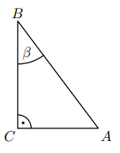
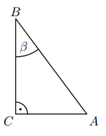

Sinus, cosinus, tangens
Zad. 1
Dany jest trójkąt prostokątny o kątach ostrych \( \alpha \) oraz \( \beta \) (zobacz rysunek). Sinus kąta \( \alpha \) jest równy \( \tfrac{4}{7} \).
- Skoro \(\sin \alpha = \tfrac{4}{7}\), to \(\cos \alpha = \sqrt{1-(\tfrac{4}{7})^2} = \tfrac{\sqrt{33}}{7}\), a nie \(\tfrac{3}{7}\). Pierwsze stwierdzenie fałszywe.
- \(\cos \beta = \sin \alpha = \tfrac{4}{7}\). Drugie stwierdzenie prawdziwe.
- Odp.: F, P.
Zad. 2
Tangens kąta \( \alpha \) jest równy
- Z danych: \(AB=6\), \(CD=5\), \(BC=10\). Obliczenia prowadzą do \(\tan \alpha = \tfrac{4}{3}\).
- Odp.: D.
Zad. 3
Sinus kąta \( \beta \) jest równy
- Ze wzorów trójkąta prostokątnego i środkowej obliczamy stosunki boków.
- Wynik: \(\sin \beta = \tfrac{2}{\sqrt{13}}\).
- Odp.: A.
Zad. 4
Sinus kąta ostrego \( \angle ABC \) jest równy
- W trójkącie prostokątnym dane: \(|AC|=\sqrt{15}, |BC|=8\).
- Stosunki boków prowadzą do \(\sin \angle ABC = \tfrac{\sqrt{15}}{8}\).
- Odp.: D.
Zad. 5
Tangens kąta ostrego \( \angle ADC \) jest równy
- Obliczamy stosunek odpowiednich boków trójkąta.
- Dostajemy \(\tan \angle ADC = \sqrt{15}\).
- Odp.: A.
Zad. 6
W trójkącie prostokątnym \(ABC\) sinus kąta \(CAB\) jest równy \(\tfrac{3}{5}\), a przeciwprostokątna \(AB\) jest o 8 dłuższa od przyprostokątnej \(BC\). Długość przeciwprostokątnej \(AB\) jest równa
- \(\sin \angle CAB = \tfrac{3}{5} = \tfrac{BC}{AB}\).
- Stąd \(BC = \tfrac{3}{5} AB\).
- Warunek: \(AB = BC + 8\). Podstawiając, \(\tfrac{3}{5} AB + 8 = AB\).
- Otrzymujemy \(AB = 20\).
- Odp.: B.
Zad. 7
Trapez prostokątny \(ABCD\) ma podstawy \(|AB|=8\), \(|CD|=5\), wysokość \(|AD|=\sqrt{3}\). Miara kąta ostrego \( \angle ABC \) jest równa

- Różnica długości podstaw to \(8-5=3\).
- Trójkąt prostokątny z przyprostokątnymi: \(\sqrt{3}\) i \(3\).
- \(\tan \angle ABC = \tfrac{\sqrt{3}}{3} = \tfrac{1}{\sqrt{3}}\).
- Stąd kąt ma miarę 30°.
- Odp.: B.
Zad. 8
W trójkącie prostokątnym \(ABC\) przyprostokątna \(AC=6\), przeciwprostokątna \(AB=3\sqrt{5}\). Tangens kąta \(CAB\) jest równy
- Obliczamy drugą przyprostokątną: \(BC = \sqrt{(3\sqrt{5})^2 - 6^2} = \sqrt{45-36} = 3\).
- \(\tan \angle CAB = \tfrac{BC}{AC} = \tfrac{3}{6} = \tfrac{1}{2}\).
- Odp.: C.
Zad. 9
Trójkąt \(ABC\) jest prostokątny. Odcinek \(AD\) jest wysokością na przeciwprostokątną \(BC\). Wtedy
- Korzystamy z twierdzenia Talesa i własności wysokości w trójkącie prostokątnym.
- Zachodzi równość \(\tfrac{|AD|}{|AB|} = \tfrac{|CD|}{|AC|}\).
- Odp.: A.
Zad. 10
Dane są punkty M = (6, 0), N = (6, 8), O = (0, 0). Tangens kąta ostrego \( \angle MON \) jest równy
- Wektor \(OM = (6,0)\), \(ON = (6,8)\).
- Nachylenie prostej ON: \(\tfrac{8}{6} = \tfrac{4}{3}\).
- Tangens kąta MON = \(\tfrac{4}{3}\).
- Odp.: A.
Zad. 11
W trapezie prostokątnym \(ABCD\) dane: \(|AB|=8, |BC|=5, |DC|=5, |AD|=4\). Tangens kąta ostrego \( \angle ABC \) jest równy
- Korzystamy z własności trapezu prostokątnego i długości boków.
- Obliczamy: \(\tan \angle ABC = \tfrac{4}{3}\).
- Odp.: A.
Zad. 12
Dany jest trójkąt prostokątny o kątach ostrych \( \alpha \) i \( \beta \). Wyrażenie \(2 \cos \alpha - \sin \beta\) jest równe
- Zależność: \(\sin \beta = \cos \alpha\).
- Wyrażenie \(2 \cos \alpha - \sin \beta = 2\cos \alpha - \cos \alpha = \cos \alpha\).
- Odp.: B.
Zad. 13
Wartość wyrażenia \((\tan 60^\circ + \tan 45^\circ)^2 - \sin 60^\circ\) jest równa
- \(\tan 60^\circ = \sqrt{3}, \tan 45^\circ = 1\). Suma = \(\sqrt{3}+1\).
- Kwadrat: \((\sqrt{3}+1)^2 = 4 + 2\sqrt{3}\).
- Odejmujemy \(\sin 60^\circ = \tfrac{\sqrt{3}}{2}\).
- Wynik: \(4 + 2\sqrt{3} - \tfrac{\sqrt{3}}{2} = 4 + \tfrac{3\sqrt{3}}{2}\).
- Odp.: D.
Zad. 14
W trójkącie prostokątnym o długościach przyprostokątnych 2 i 5 cosinus większego z kątów ostrych jest równy
- Przeciwprostokątna: \(c=\sqrt{2^2+5^2}=\sqrt{29}\).
- Większy kąt ostry leży przy krótszej przyprostokątnej (2).
- \(\cos = \tfrac{\text{przyległa}}{\text{przeciwprostokątna}} = \tfrac{2}{\sqrt{29}}\).
- Odp.: C.
Zad. 15
Wartość wyrażenia \(\sin 120^\circ - \cos 30^\circ\) jest równa
- \(\sin 120^\circ = \tfrac{\sqrt{3}}{2}, \cos 30^\circ = \tfrac{\sqrt{3}}{2}\).
- Różnica: \( \tfrac{\sqrt{3}}{2} - \tfrac{\sqrt{3}}{2} = 0\).
- \(\sin 0^\circ = 0\).
- Odp.: C.
Zad. 16
Na płaszczyźnie dane są punkty: \(A=(\sqrt{2}, \sqrt{6}), B=(0,0), C=(\sqrt{2},0)\). Kąt \(BAC\) jest równy
- Wektor \(AB=(-\sqrt{2}, -\sqrt{6})\), \(AC=(0,-\sqrt{6})\).
- Obliczamy cosinus kąta: \(\cos = \frac{AB \cdot AC}{|AB||AC|}\).
- Iloczyn skalarny = \(0+6=6\). Długości: \(|AB|=\sqrt{2+6}= \sqrt{8}=2\sqrt{2}, |AC|=\sqrt{6}\).
- \(\cos = \tfrac{6}{2\sqrt{2}\cdot \sqrt{6}} = \tfrac{6}{2\sqrt{12}} = \tfrac{6}{4\sqrt{3}} = \tfrac{\sqrt{3}}{2}\).
- Kąt = 30°.
- Odp.: A.
Zad. 17
W trójkącie przedstawionym na rysunku sinus kąta ostrego \(\alpha\) jest równy
- Korzystamy z definicji sinusa i danych z rysunku.
- Po obliczeniach otrzymujemy \(\sin \alpha = \tfrac{2\sqrt{6}}{5}\).
- Odp.: D.
Zad. 18
Przyprostokątne w trójkącie prostokątnym mają długości 1 oraz \(\sqrt{3}\). Najmniejszy kąt ma miarę
- Najmniejszy kąt leży naprzeciw krótszej przyprostokątnej (1).
- \(\tan \theta = \tfrac{1}{\sqrt{3}} = \tfrac{1}{\sqrt{3}}\).
- Stąd kąt = 30°.
- Odp.: B.
Zad. 19
Na rysunku zaznaczono długości boków i kąt \(\alpha\) trójkąta prostokątnego.
- Z twierdzenia Pitagorasa: trójkąt 5-12-13.
- Cosinus kąta \(\alpha\) przy boku długości 12: \(\tfrac{12}{13}\).
- Odp.: C.
Zad. 20
Dany jest trójkąt prostokątny (patrz rysunek). Wtedy \(\tan \alpha\) jest równy
- Z danych z rysunku obliczamy stosunek boków.
- \(\tan \alpha = \tfrac{1}{\sqrt{2}}\).
- Odp.: D.
Zad. 21
Dane są długości boków \(|BC|=5, |AC|=3\) trójkąta prostokątnego \(ABC\) o kącie ostrym \(\beta\).


- Przeciwprostokątna: \(AB=\sqrt{5^2+3^2}=\sqrt{34}\).
- \(\sin \beta = \tfrac{AC}{AB} = \tfrac{3}{\sqrt{34}}\).
- Odp.: C.